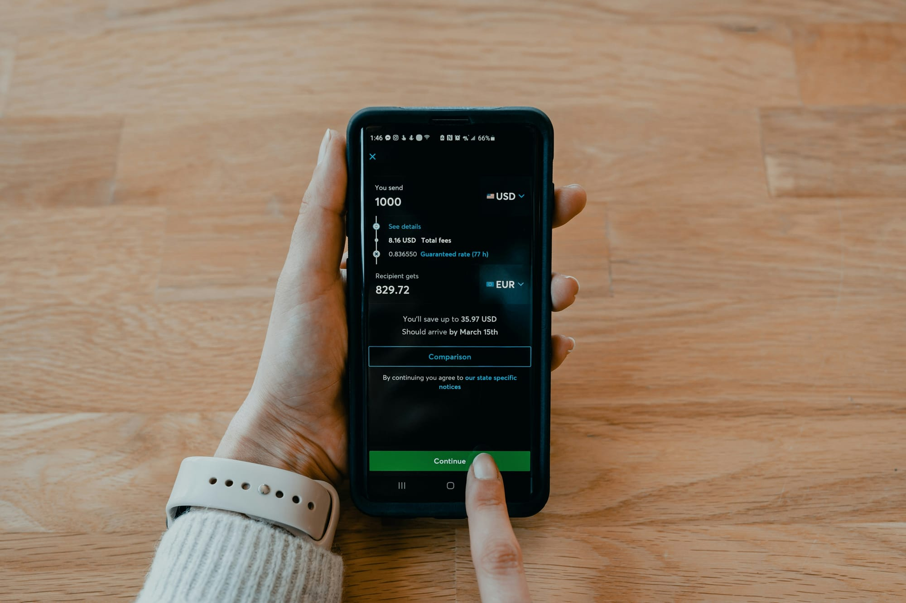

Mejores apps para ahorrar dinero automáticamente en 2027
Oportun (antes Digit), Qapital, Acorns, Chime y Ally comparadas: precio mensual, cómo ahorra cada una, quién guarda el dinero y cuota frente a interés.
Z Zar · 28 de noviembre de 2026 — 13 min de lectura

La forma más barata de ahorrar automáticamente en 2027 es evitar la suscripción: Chime y Ally no cobran mensualidad, mientras que Oportun (antes Digit), Qapital y Acorns cobran de $3 a $12 al mes. Con el 3.2% APY de Ally, $1,000 generan unos $32 al año, menos que el plan de pago más barato de esta lista ($36).
Parte de nuestra Budget & Debt Guide (guía de presupuesto y deudas, en inglés)
Cuando ahorrar es automático, sucede; cuando exige una decisión cada mes, muchas veces no. A continuación comparamos cinco apps que mueven el dinero por ti, según lo que se puede comprobar en las páginas de cada empresa: el precio mensual, cómo ahorra, dónde está el dinero y si aplica el seguro de la FDIC. Las tasas de interés de las cuentas de ahorro son variables, así que cada tasa aquí lleva su fecha; revisa la tasa vigente antes de abrir cualquier cuenta.
Comparación rápida
| App | Precio mensual | Cómo ahorra por ti | Dónde está el dinero | Interés sobre el ahorro |
|---|---|---|---|---|
| Oportun (antes Digit) | $5.99, o $3.99 al mes con el plan anual, tras una prueba gratis de 30 días | Set & Save mueve dinero hacia tus metas cuando calcula que puedes permitírtelo | Bancos asociados, con seguro de la FDIC hasta $250,000 (la página de App Store no nombra los bancos); Oportun no es un banco | La ficha de App Store no muestra ninguna tasa |
| Qapital | $3 Basic, $8 Complete, $12 Premier, tras una prueba gratis de 30 días | Save aparta dinero automáticamente cuando fijas una meta; Budget aparta dinero en cuanto te pagan | Lincoln Savings Bank, Member FDIC; Qapital no es un banco | Las páginas de Qapital no muestran ninguna tasa |
| Acorns | $4 Bronze, $8 Silver, $12 Gold | Round-Ups invierte el cambio sobrante; Emergency Savings (Silver y superiores) es una cuenta de ahorro | Cuenta de cheques y Emergency Savings a través de Lincoln Savings Bank o nbkc bank, con seguro de la FDIC; las inversiones no tienen seguro de la FDIC | 3.59% APY en Emergency Savings al 22 de septiembre de 2026 (variable), solo con Silver o Gold |
| Chime | $0 por la cuenta de ahorro (requiere una Chime Checking Account) | Round Ups y transferencias automáticas de una parte de cada depósito directo | The Bancorp Bank, N.A. o Stride Bank, N.A., ambos miembros de la FDIC; Chime no es un banco | 1.00%, 3.00% o 4.00% APY según el nivel, vigente desde el 6 de octubre de 2026 (variable) |
| Ally | $0, sin saldo mínimo | Recurring Transfers, Round Ups y Surprise Savings hacia hasta 30 «buckets» (apartados) | Ally Bank, con seguro de la FDIC | 3.2% APY al 24 de noviembre de 2026 (variable) |
Como referencia, la FDIC publica un promedio nacional de tasa de ahorro de 0.39% al 16 de noviembre de 2026. Las tasas cambian con frecuencia; cada una lleva la fecha que dio la empresa.
Por qué funciona el ahorro automático
La diferencia entre quienes ahorran con constancia y quienes no rara vez es el ingreso. Es el diseño del sistema.
Quienes ahorran con constancia tienen sistemas que convierten el ahorro en el comportamiento por defecto. A quienes les cuesta ahorrar dependen de la fuerza de voluntad y las buenas intenciones, que son limitadas y poco confiables. Una app que mueve un poco de dinero cada día de pago saca la fuerza de voluntad de la ecuación.
¿La suscripción se paga sola?
Este es el punto débil de las apps de ahorro de pago: pagas una cuota por ahorrar tu propio dinero. Esta es la aritmética con los precios y tasas publicados (interés simple a un año; los saldos son ejemplos, no promedios):
- Base sin cuotas: un saldo de $1,000 al 3.2% APY de Ally genera unos $32 al año; $5,000 generan unos $160. En el nivel más alto de Chime, 4.00%, $1,000 generan unos $40. Con el promedio nacional de 0.39%, $1,000 generan unos $3.90.
- Qapital Basic: $3 al mes son $36 al año, más que los $32 que generan $1,000 al 3.2%. Las páginas de Qapital no muestran tasa de interés, así que no podemos decir que la cuenta Save genere algo.
- Oportun: $5.99 al mes son $71.88 al año, o $47.88 al año con el precio del plan anual de $3.99. La ficha de App Store no muestra tasa de interés.
- Acorns Silver: $8 al mes son $96 al año. Emergency Savings al 3.59% APY (al 22 de septiembre de 2026) solo genera $96 con un saldo de unos $2,674, así que por debajo de esa cifra el interés no cubre el plan por sí solo. (Silver incluye además otras funciones, así que esto es solo la cuenta del ahorro.) Bronze, a $4 al mes, no incluye Emergency Savings.
Si tu meta es simplemente apartar dinero, una cuenta gratuita con transferencias automáticas hace lo mismo sin cuota. Un plan de pago solo tiene sentido si de verdad vas a usar funciones que no consigues en otro lado.
Las mejores apps de ahorro automático en 2027
1. Oportun (antes Digit): la mejor para ahorrar sin intervenir, con el momento elegido por un algoritmo
Digit ahora es la app Oportun: Savings & Loans. Su ficha de App Store indica que antes se llamaba Digit. La función de ahorro, Set & Save, aprende tus patrones de ingresos y gastos y aparta dinero hacia tus metas cuando considera que es buen momento. Puedes pausar los ahorros, mover dinero entre metas o devolverlo a tu banco. Las metas de Smart Bills pueden ahorrar para pagos recurrentes.
Precio: $5.99 al mes, o $3.99 al mes con un plan anual, tras una prueba gratis de 30 días; puedes cancelar cuando quieras. Según la ficha, los ahorros tienen seguro de la FDIC hasta $250,000 a través de bancos asociados, que no nombra, y Oportun declara que no es un banco. No pudimos verificar ninguna tasa de interés para el ahorro, y oportun.com bloqueó la lectura automática, así que no citamos ninguna.
Conviene saber: el 10 de agosto de 2022, la CFPB (Oficina para la Protección Financiera del Consumidor) concluyó que Hello Digit, la antigua operadora de Digit, había engañado a los consumidores sobre su herramienta de ahorro automático, incluidos los cargos por sobregiro causados por sus transferencias, y le impuso una multa de $2.7 millones (ver Fuentes).
Ideal para: quienes quieren el ahorro totalmente automatizado y no les molesta pagar por ello.
2. Qapital: la mejor para ahorrar por metas
Save, de Qapital, aparta dinero automáticamente una vez que fijas una meta, y su función Budget aparta el dinero para gastos en cuanto te pagan. Precios mensuales: Basic $3, Complete $8 (añade inversión, una tarjeta de débito Visa y análisis personalizados) y Premier $12 (añade los portafolios Premier Invest), con una prueba gratis de 30 días.
Qapital es una empresa de tecnología financiera, no un banco. Lincoln Savings Bank, Member FDIC, ofrece las cuentas Save y Spend y la tarjeta de débito, y el seguro de depósitos cubre a ese banco, no a Qapital. Con Basic, los fondos de Save se guardan en una cuenta fiduciaria colectiva para los usuarios de Qapital; con una cuenta Spend en Complete o Premier, los fondos de Save y Spend se guardan por separado a tu nombre. Las páginas de Qapital no indican ninguna tasa de interés.
Ideal para: quienes quieren configurar una vez las metas y el ahorro basado en el cheque de pago, y olvidarse.
3. Acorns: la mejor para invertir el cambio sobrante
Acorns invierte en lugar de ahorrar: Round-Ups invierte el cambio sobrante de tus compras (una compra de $2.50 invierte $0.50). Planes: Bronze $4, Silver $8 y Gold $12 al mes. Los tres incluyen Round-Ups, una cuenta de inversión y una cuenta de jubilación Acorns Later. Silver y Gold añaden Emergency Savings, una cuenta de ahorro que anuncia un 3.59% APY variable al 22 de septiembre de 2026 (revisa la tasa vigente).
Las inversiones se ofrecen a través de Acorns Advisers, LLC y Acorns Securities, LLC (corredor de bolsa miembro de FINRA y SIPC), no tienen seguro de la FDIC y pueden perder valor. Acorns Checking y Emergency Savings se ofrecen a través de Lincoln Savings Bank o nbkc bank, ambos miembros de la FDIC; los depósitos allí están asegurados hasta $250,000 por depositante, por banco asegurado y por categoría de titularidad.
Ideal para: principiantes que quieren invertir el cambio sobrante y valoran el paquete. Si solo quieres una cuenta de ahorro, el plan Silver, a $96 al año, es la forma cara de conseguirla.
4. Chime: la mejor opción gratuita
La cuenta de ahorro de Chime no tiene cuota mensual, pero necesitas una Chime Checking Account para abrirla. El ahorro automático viene de Round Ups (las compras se redondean al siguiente dólar y la diferencia pasa al ahorro) y de transferencias automáticas, incluida una regla que desvía el 10% de cada depósito directo.
El APY de ahorro depende de tu nivel, vigente desde el 6 de octubre de 2026 y variable: 1.00% estándar, 3.00% Chime Plus (un solo depósito de $200 o más, o $400 o más acumulados en los últimos 34 días) y 4.00% Chime Prime ($3,000 o más en depósitos directos que califiquen en los últimos 34 días). Chime no es un banco; los servicios bancarios los presta The Bancorp Bank, N.A. o Stride Bank, N.A., ambos miembros de la FDIC, y la cobertura es de hasta $250,000 por depositante, por banco asegurado y por categoría de titularidad. Los servicios opcionales, como las transferencias instantáneas, pueden tener cargos.
Ideal para: quienes cobran por depósito directo y quieren automatización sin suscripción.
5. Ally Savings Buckets: la mejor para ahorrar por metas
La cuenta de ahorro en línea de Ally no tiene cuota mensual ni saldo mínimo ni depósito de apertura. Puedes dividirla en hasta 30 «buckets» (apartados), cada uno con su meta. Tres «boosters» automatizan el ahorro: Recurring Transfers (transferencias programadas), Round Ups (compras de la cuenta de gastos redondeadas; la transferencia ocurre cuando se acumulan al menos $5, y cada una va de $5 a $20) y Surprise Savings (dinero seguro de ahorrar, tomado de las cuentas de cheques vinculadas).
El APY era de 3.2% al 24 de noviembre de 2026 y es variable. Los depósitos tienen seguro de la FDIC hasta el máximo permitido por ley. Ally limita ciertos retiros y transferencias de ahorro a 10 por ciclo de estado de cuenta.
Ideal para: ahorradores que se guían por metas y quieren varias metas en una sola cuenta sin cuotas.
Cómo combinar las apps de ahorro automático
No necesitas las cinco. Una configuración sencilla es una cuenta sin cuotas que haga la automatización (los buckets de Ally, o Chime si tienes depósito directo), más una app de pago solo si vas a usar algo que la opción gratuita no tiene. Revisa la tasa vigente de una cuenta de alto rendimiento antes de mover un saldo grande; nuestra comparación de cuentas de ahorro de alto rendimiento explica dónde están las mejores tasas, y nuestra guía de apps de cashback explica cómo ganar con gastos que ya haces.
Construye los hábitos detrás de las apps
El libro I Will Teach You to Be Rich (en inglés), de Ramit Sethi, expone el marco de automatizar el ahorro, los pagos de facturas y la inversión; las apps cambian, la idea no.
Qué hacer con el dinero ahorrado automáticamente
Las apps de ahorro automático son el mecanismo para juntar dinero; cuando el saldo crece, revisa si está ganando una tasa competitiva. Compara la tasa con el promedio nacional (0.39% al 16 de noviembre de 2026, según la FDIC) antes de dejar un saldo grande donde gana poco.
- Fondo de emergencia: guárdalo en una cuenta de ahorro asegurada a la que puedas llegar rápido.
- Metas a corto plazo: una cuenta de ahorro o una cuenta money market.
- Metas a largo plazo: inversiones, que no tienen seguro de la FDIC y pueden perder valor.
Preguntas frecuentes
¿Cuál es la mejor app para ahorrar dinero automáticamente?
Para la mayoría de las personas, una gratuita: Ally (buckets, transferencias recurrentes y round-ups, $0 de cuota mensual) o Chime (round-ups y transferencias del depósito directo, $0 por el ahorro). Las apps de pago cobran de $3 a $12 al mes, más de lo que generan muchos saldos en un año.
¿Las apps de ahorro automático tienen seguro de la FDIC?
Las apps en sí no son bancos. El seguro viene del banco asociado que guarda el depósito: Lincoln Savings Bank (Qapital, y Acorns Checking y Emergency Savings), nbkc bank (Acorns), The Bancorp Bank y Stride Bank (Chime). Ally es en sí un banco asegurado por la FDIC. Las inversiones, como los Round-Ups de Acorns, no tienen seguro de la FDIC y pueden perder valor.
¿Vale la pena pagar una cuota mensual por ahorrar?
Por lo general no, si es solo para ahorrar. Qapital Basic cuesta $36 al año y Acorns Silver $96, mientras que $1,000 al 3.2% generan unos $32. Un plan de pago solo vale la pena si vas a usar las demás funciones que incluye.
¿Qué pasó con Digit?
Digit ahora es la app Oportun: Savings & Loans, y su ficha de App Store indica que antes se llamaba Digit. Sigue ofreciendo ahorro automatizado por $5.99 al mes, o $3.99 al mes con el plan anual, tras una prueba gratis de 30 días.
¿Los round-ups realmente suman?
Depende de cuánto gastes. Una compra de $2.50 se redondea con $0.50, así que lo que ahorras por transacción es poco; el valor está en que ocurre sin tener que decidir. Ally mueve los round-ups cuando se han acumulado al menos $5.
Conclusión
El ahorro automático no se trata de disciplina, sino del diseño del sistema. Elige una cuenta, activa una regla automática y déjala. Desconfía de pagar una suscripción por ahorrar tu propio dinero, a menos que las funciones valgan más que la cuota.
Automatizar tus ahorros es la mitad de la ecuación: la otra es ganar con el dinero que ya gastas. Nuestra guía sobre las mejores formas de usar las recompensas de tarjetas de crédito en 2026 (en inglés) muestra cómo sumar cashback a estas apps.
¿Quieres profundizar? Consulta Best Ways to Save Money on Subscriptions in 2026 (en inglés).
¿Quieres profundizar? Consulta The 50/30/20 Budget Rule Explained (And How to Make It Work for You) (en inglés).
¿Quieres profundizar? Consulta How to Build a $1,000 Emergency Fund Fast (Even on a Tight Budget) (en inglés).
Descarga gratis: el checklist de 10 pasos para la independencia financiera
La hoja de ruta exacta que seguí para construir mis bases financieras. 6 páginas, con diseño profesional, gratis y sin pedir tu correo.
Descargar el checklist gratis (en inglés)
Qué cambió
- Digit: ahora es la app Oportun: Savings & Loans (antes Digit). El precio ahora es $5.99 al mes, o $3.99 con el plan anual, tras una prueba gratis de 30 días (decíamos $5 al mes). Eliminamos el bono de ahorro de 0.10%, las afirmaciones de «$150-400 al mes» y «$5-35 a la vez», y la clasificación de «el más sofisticado», que no pudimos verificar.
- Qapital: corregimos los precios a $3 Basic, $8 Complete y $12 Premier (decíamos $3-12 según el plan, sin nombrarlos); añadimos el banco asociado (Lincoln Savings Bank). Eliminamos los ejemplos de reglas (redondeo, placer culposo, gastar menos, freelancer) que no pudimos vincular a las páginas actuales de Qapital.
- Acorns: corregimos los precios a $4 Bronze, $8 Silver y $12 Gold (decíamos $3 personal y $5 familiar). Eliminamos el umbral de los round-ups y la línea aparte de Acorns Early (las cuentas para menores ahora están en Gold). Añadimos Emergency Savings (3.59% APY, solo Silver y Gold) y la distinción entre FDIC y SIPC.
- Chime: el 2.00% APY era incorrecto. Las tasas ahora son escalonadas, de 1.00%, 3.00% y 4.00% (vigentes desde el 6 de octubre de 2026), y el nivel de 4.00% exige $3,000 o más en depósitos directos en 34 días. Nombramos los bancos asociados; la cuenta de ahorro requiere una Chime Checking Account.
- Ally: el 4.40% APY estaba desactualizado; es 3.2% al 24 de noviembre de 2026. Reemplazamos la línea de «fondo de emergencia al 4.5% APY o más», que ya no coincide con ninguna tasa verificada.
- Nueva sección sobre si las suscripciones se pagan solas, con el cálculo del punto de equilibrio, y una comparación de tasas con el promedio nacional de la FDIC (0.39% al 16 de noviembre de 2026).
- Digit: eliminamos las afirmaciones de que analiza tu cuenta a diario, considera las facturas próximas y pausa el ahorro para evitar sobregiros, y añadimos la conclusión de la CFPB de 2022 contra Hello Digit. Eliminamos el esquema de tres capas de apps.
- Chime: la regla de ahorro automático ahora se describe como la expone Chime, el 10% de cada depósito directo.
- Eliminamos la afirmación sin verificar de que «la mayoría de los usuarios reportan $300-600 más al mes», el total de «$6-8 al mes del ecosistema» y el llamado a «descargar Chime o Acorns hoy». Eliminamos el recuadro roto del libro y el código sobrante que lo rodeaba.
Fuentes
- Oportun: Savings & Loans (antes Digit) — ficha en App Store
- CFPB — Acción contra Hello Digit
- Qapital — Precios
- Qapital — Página principal
- Acorns — Precios
- Chime — Página principal
- Chime — Cuenta de ahorro de alto rendimiento
- Ally — Cuenta de ahorro en línea
- Ally — Preguntas frecuentes sobre ahorro y money market
- FDIC — Tasas nacionales y topes de tasas
Última verificación: 28 de noviembre de 2026.